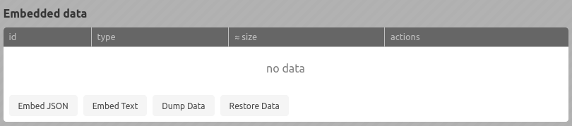

IMP! Data Embedding
Intro
IMP! (since version 0.5) allows you to embed data into HTML. Data can than be used by helpers, in static and/or interactive content, or by your own scripts.
Attaching data
You can add data in IMP! GUI. There are two types of embedded data: string and object.

Retrieving data
Directly
Embedded data is saved in global variable window.impData, which has the following structure:
window.impData{
.
.
"data-id": {
"type": "string" or "object",
"data": -- data itself,
object or string
}
.
.
}
Via fetch()
In IMP! GUI and in view mode, if helpers are enabled, standart fetch() function is patched.